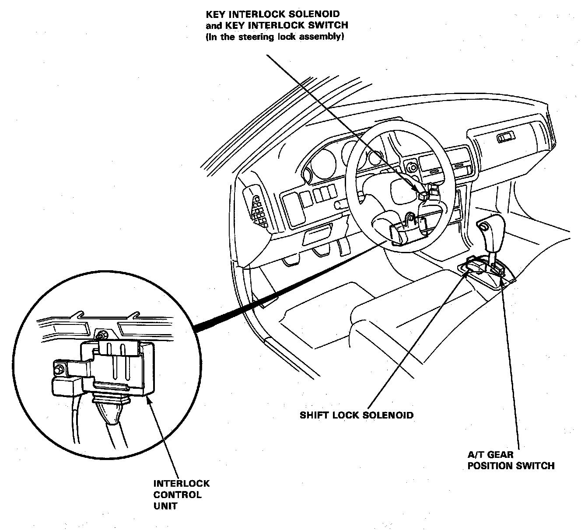

Operation CHARM
: Car repair manuals for everyone.
Home
>>
Acura
>>
1993
>>
Integra L4-1678cc 1.7L DOHC (VTEC) FI
>>
Repair and Diagnosis
>>
Lighting and Horns
>>
Interior Lighting Module
>>
Locations
Interior Lighting Module: Locations
Chime:
Interlock Control Unit:

The Chime is located next to the interlock control unit.